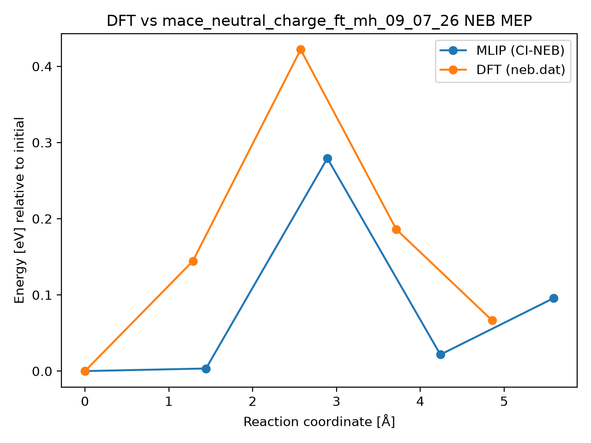

DFT vs mace_neutral_charge_ft_mh_09_07_26 NEB MEP
Metrics
- mlip_barrier_eV: 0.2792850676493117
- mlip_deltaE_eV: 0.09576357610023933
- dft_barrier_eV: 0.42191
- dft_deltaE_eV: 0.066483
- energy_RMSE_eV: 0.11447391421249635
- Mlip dt: None
- Mlip_d3 dt: None
- mlip_d3 climb dt: None
- Total NEB time (s): None
- max_F_perp_eV_per_A: None
- force_RMSE_eV_per_A: None
- max_force_err_eV_per_A: None
- model: mace_neutral_charge_ft_mh_09_07_26
- raw_dir: /home/ctweedie/PhD_Ubuntu/projects/mlips/mlip-workflows/neb_tests/g_CsPbI2Br/VI0/Pb57/8d-I4c/results_5imgs/raw
- dft_neb_dat: /home/ctweedie/PhD_Ubuntu/projects/mlips/mlip-workflows/neb_tests/g_CsPbI2Br/VI0/Pb57/8d-I4c/neb.dat
Plot
